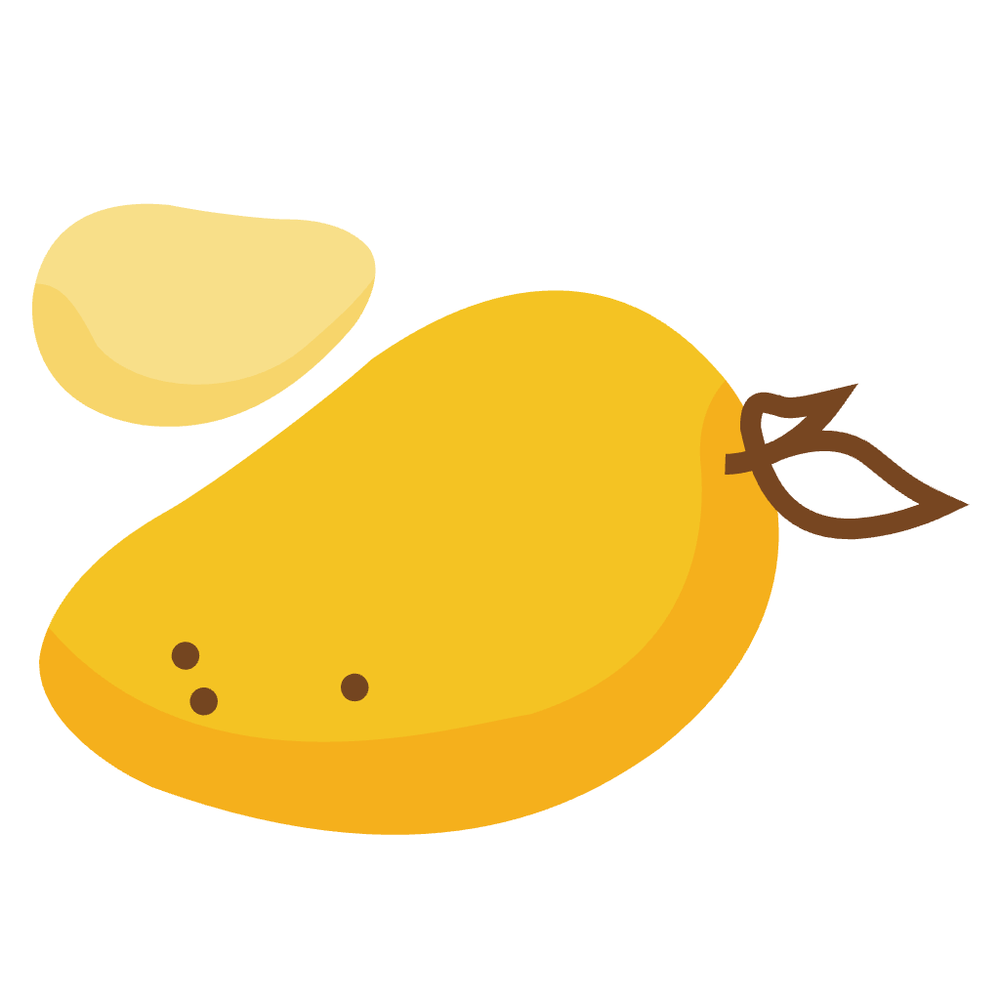
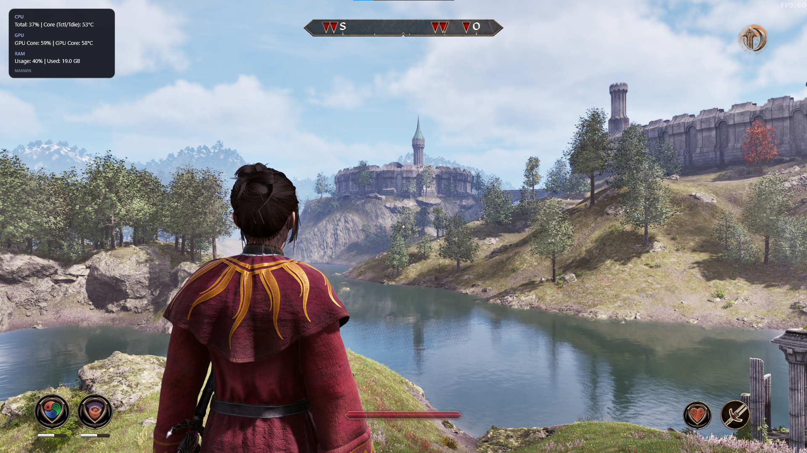

Overlay transparente
Consulta tus métricas encima de tus juegos y aplicaciones. La ventana es atravesable al clic para que sigas usando lo que tienes debajo.

ManWinCPU, GPU y memoria en un OSD discreto que te acompaña mientras juegas o trabajas. Tú eliges qué mostrar y dónde verlo.

ManWin mantiene tus lecturas visibles sin robarte el foco ni llenar la pantalla de paneles.
Consulta tus métricas encima de tus juegos y aplicaciones. La ventana es atravesable al clic para que sigas usando lo que tienes debajo.
Activa las lecturas que te interesan y guarda tu selección. El OSD se adapta a lo que quieres vigilar.
Minimiza la ventana al área de notificación. El OSD y la lectura de sensores siguen funcionando hasta que salgas de ManWin.
ManWin en tus juegos favoritos y en la ventana de métricas.
ManWin no mide FPS actualmente. El contador que aparece en algunas capturas pertenece al overlay del juego.
Un flujo sencillo para dejar el overlay exactamente como lo quieres.
Activa los sensores disponibles de CPU, GPU y memoria.
ManWin recuerda tus preferencias entre sesiones.
El OSD queda visible mientras ManWin se oculta en la bandeja.
ManWin funciona en Windows 10 y 11 de 64 bits. Algunas lecturas dependen de los sensores que exponga tu hardware.
ManWin te ayuda a escucharlo de un vistazo.
Consigue ManWin arrow_forward Proyecto gratuito y de código abierto